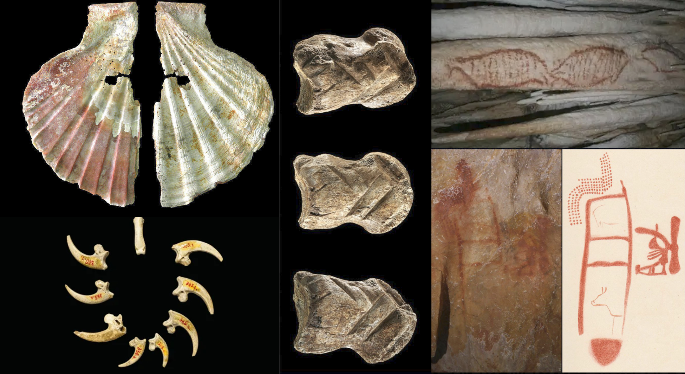
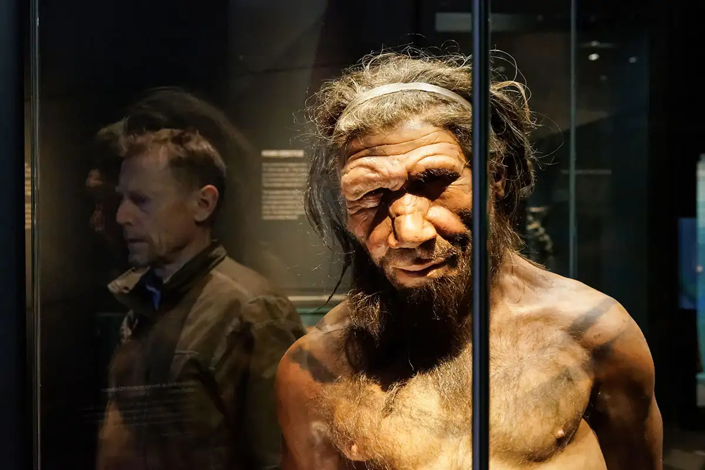
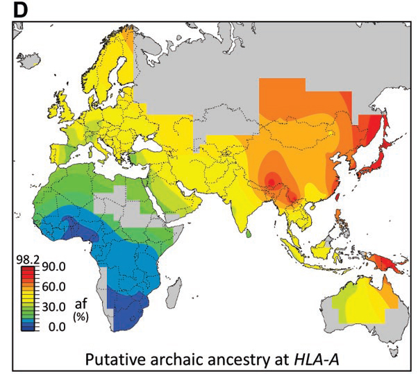
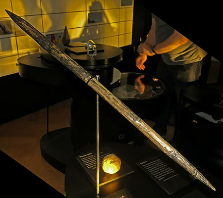
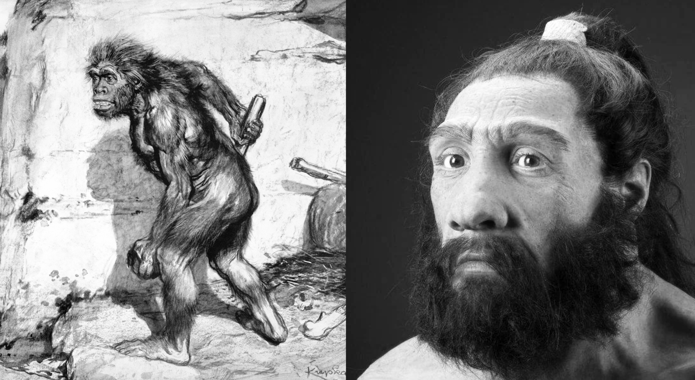

Article Sources
- Degioanni, A., et al. (2019). Living on the edge: Was demographic weakness the cause of Neanderthal demise? PLOS ONE, 14(5). https://doi.org/10.1371/journal.pone.0216742
- Finlayson, C., & Carrión, J. S. (2007). Rapid ecological turnover and its impact on Neanderthal and other human populations. Trends in Ecology & Evolution, 22(4). https://doi.org/10.1016/j.tree.2007.02.001
- Green, R. E., et al. (2010). A draft sequence of the Neandertal genome. Science, 328(5979). https://doi.org/10.1126/science.1188021
- Kolodny, O., & Feldman, M. W. (2017). A parsimonious neutral model... Nature Communications, 8. https://doi.org/10.1038/s41467-017-01043-z
- Luchetti, M. (2022). The quantification of intelligence in 19th-century craniology... European Journal for Philosophy of Science, 12. https://doi.org/10.1007/s13194-022-00485-7
- Sano, K., Moroni, A., Benazzi, S., et al. (2019). The earliest evidence for mechanically delivered projectile weapons in Europe. Nature Ecology & Evolution, 3(8). https://doi.org/10.1038/s41559-019-0990-3
- Thieme, H. (1997). Lower Palaeolithic hunting spears from Germany. Nature, 385(6619). https://doi.org/10.1038/385807a0
- Toncheva, D., et al. (2023). Pathogenic variants associated with rare monogenic diseases... Genes, 14(3). https://doi.org/10.3390/genes14030727
- Vaesen, K., Scherjon, F., Hemerik, L., & Verpoorte, A. (2019). Inbreeding, Allee effects, and stochasticity... PLOS ONE, 14(11). https://doi.org/10.1371/journal.pone.0225117
- Zhou, Z., et al. (2022). Did variants in inborn errors of immunity genes contribute to the extinction of Neanderthals? APJAI, 40(4). https://doi.org/10.12932/AP-251022-1489
- Zilhão, J. (2012). Personal ornaments and symbolism among the Neanderthals. Elsevier. https://doi.org/10.1016/B978-0-444-53821-5.00004-X
Image Sources

Vaesen et al. (2019). Neanderthal extinction. PLOS ONE. https://doi.org/10.1371/journal.pone.0225117

Asiain R et al., Antiquity (2023). doi:10.15184/aqy.2023.122
Additional: irozhlas.cz, Scientific American, Haaretz, History Blog

New Scientist: Neanderthal DNA in modern populations

Live Science: Neanderthal immunity traits

Don's Maps: Early hunting tools

Smithsonian Magazine: Neanderthal intelligence and art